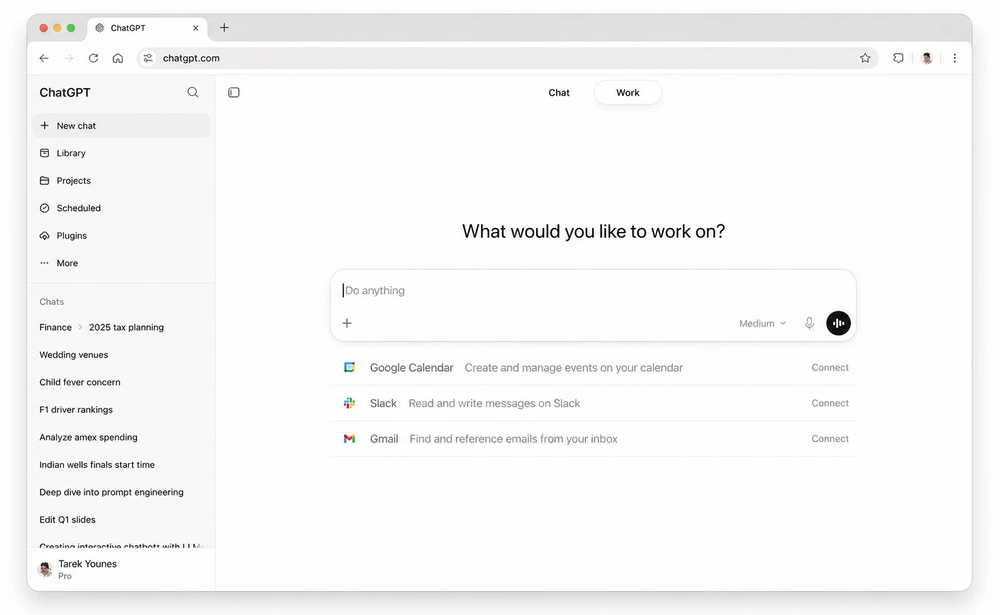

Bring your ideas to life.
ChatGPT can now take on your most ambitious work. The familiar ChatGPT experience and the full power of Codex now in one app.
Explore ideas.
Use Chat to ask questions, think through possibilities, and make sense of topics through conversation.
Ask questions, get clear explanations, and follow your curiosity through conversation.
Get work done.
Use ChatGPT Work to turn a goal, files, and context into documents, spreadsheets, presentations, and other useful deliverables.
Find patterns, compare evidence, and surface the insights that matter.
Build anything.
Use Codex to understand codebases, build and test features, fix bugs, and review changes.
Understand how a project is structured, find the important files, and get oriented quickly.
What will you do with ChatGPT?
Start with a workflow, a deliverable, or something you want to build.
What’s new in ChatGPT and Codex

Choose GPT-6 Sol and Luna
GPT-6 Sol and GPT-6 Luna are rolling out in Codex at lower token prices than their GPT-5.6 predecessors.

Watch and learn
Get started with ChatGPT Work, explore new features, and see practical workflows in action.